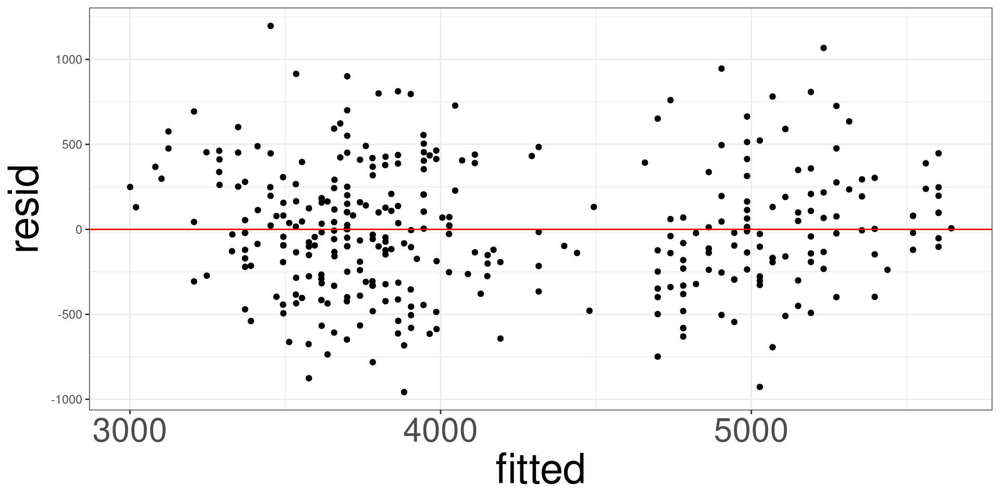
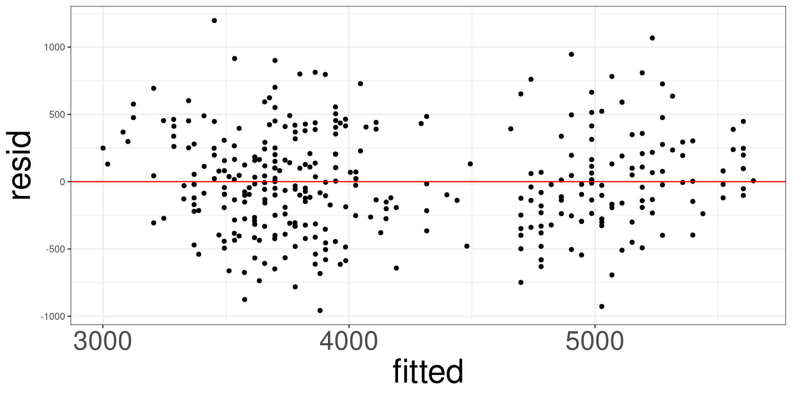

Linear and Generalized Linear Models
Probability of observing data as extreme as this if \(H_0\) is true
Misinterpretation of p-values is common.
Emphasize: low p-value means data is unusual under \(H_0\).
Hypothesis tests are used to test whether claims are valid or not. This is conducted by collecting data, setting the Null and Alternative Hypothesis.
The null hypothesis is the claim that is initially believed to be true. For the most part, it is always equal to the hypothesized value.
The alternative hypothesis contradicts the null hypothesis.
We want to see if \(\beta\) is different from \(\beta^*\)
| Null Hypothesis | Alternative Hypothesis |
|---|---|
| \(H_0: \beta=\beta^*\) | \(H_1: \beta\ne\beta^*\) |
| \(H_0: \beta\le\beta^*\) | \(H_1: \beta>\beta^*\) |
| \(H_0: \beta\ge\beta^*\) | \(H_1: \beta<\beta^*\) |
Notice how there are 3 types of null and alternative hypothesis, The first type of hypothesis (\(H_1:\beta\ne\beta^*\)) is considered a 2-sided hypothesis because the rejection region is located in 2 regions. The remaining two hypotheses are considered 1-sided because the rejection region is located on one side of the distribution.
| Null Hypothesis | Alternative Hypothesis | Side |
|---|---|---|
| \(H_0: \beta=\beta^*\) | \(H_1: \beta\ne\beta^*\) | 2-Sided |
| \(H_0: \beta\le\beta^*\) | \(H_1: \beta>\beta^*\) | 1-Sided |
| \(H_0: \beta\ge\beta^*\) | \(H_1: \beta<\beta^*\) | 1-Sided |
The rejection region is the set of all test statistic values that lead to rejecting \(H_0\).
It’s defined by a significance level (\(\alpha\)) — the probability of rejecting \(H_0\), when it’s actually true.
Hypothesis Testing will force you to make a decision: Reject \(H_0\) OR Fail to Reject \(H_0\)
Reject \(H_0\): The effect seen is not due to random chance, there is a process contributing to the effect.
Fail to Reject \(H_0\): The effect seen is due to random chance. Random sampling is the reason why an effect is displayed, not an underlying process.
\[ ts = \frac{\hat\beta_j - \beta_j}{\mathrm{se}(\hat\beta_j)} \sim N(0,1) \]
\[ ts = \frac{\hat\beta_j-\beta_j}{\mathrm{se}(\hat\beta_j)} \sim t_{n-p} \]
Two-Sided Test
\[ P(T > |ts|) = \int^\infty_{ts} f(t) dt + \int_{-\infty}^{ts} f(t) dt \]
One-Sided Test \[ P(T > ts) = \int^\infty_{ts} f(t) dt \]
OR \[ P(T < ts) = \int_{-\infty}^{ts} f(t) dt \]
The p-value approach is one of the most common methods to report significant results. It is easier to interpret the p-value because it provides the probability of observing our test statistics, or something more extreme, given that the null hypothesis is true.
If \(p < \alpha\), then you reject \(H_0\); otherwise, you will fail to reject \(H_0\).
The significance level \(\alpha\) is the probability you will reject the null hypothesis given that it was true.
In other words, \(\alpha\) is the error rate that a researcher controls.
Typically, we want this error rate to be small (\(\alpha = 0.05\)).
Model Inference is the act of conducting a hypothesis test on the entire model (line). We do this to determine if the fully explained model is significantly different from the smaller models or average.
Model inference determines if more variation is explained by including more predictors.
\[ Y = \beta_0 + \beta_1 X_1 + \cdots + \beta_p X_p \]
\[ Y = \beta_0 + \beta_1 X_1 \]
\(H_0\): The fully-parameterized model does not explain more variation than the reduced model.
\(H_a\): The fully-parameterized model does explain more variation than the reduced model.
\[ PE \pm CV \times SE \]
\[ (LB = PE - CV \times SE, UB = PE + CV \times SE) \]
“We are 95% confident that the true mean lies between A and B.”
The confidence interval approach can evaluate a hypothesis test where the alternative hypothesis is \(\beta\ne\beta^*\). The confidence interval approach will result in a lower and upper bound denoted as: \((LB, UB)\).
If \(\beta^*\) is in \((LB, UB)\), then you fail to reject \(H_0\). If \(\beta^*\) is not in \((LB,UB)\), then you reject \(H_0\).
| Type I | Reject \(H_0\) when true | False positive |
| Type II | Don’t reject \(H_0\) when false | False negative |
| Power | \(1 - P(\text{Type II})\) | Detecting a true effect |
When we are conducting inference with regression models, we will have to check the following conditions:
There must be a linear relationship between both the outcome variable (y) and a set of predictors (\(x_1\), \(x_2\), …).
The data points must not influence each other.
The model errors (also known as residuals) must follow a specified distribution.
Linear Regression: Normal Distribution
Logistic Regression: Binomial Distribution
The variability of the data points must be the same for all predictor values.
Residuals are the errors between the observed value and the estimated model. Common residuals include
Raw Residual
Standardized Residuals
Jackknife (studentized) Residuals
Deviance Residuals
Quantized Residuals
Influential measures are statistics that determine how much a data point affects the model. Common influential measures are
Leverages
Cook’s Distance
\[ \hat r_i = y_i - \hat y_i \]
A residual analysis is used to test the assumptions of linear regression.
A qq (quantile-quantile) plot will plot the estimated quantiles of the residuals against the theoretical quantiles from a normal distribution function. If the points from the qq-plot lie on the \(y=x\) line, it is said that the residuals follow a normal distribution.
This plot allows you to assess the linearity, constant variance, and identify potential outliers. Create a scatter plot between the fitted values (x-axis)
